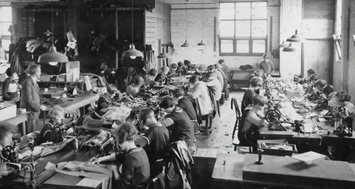
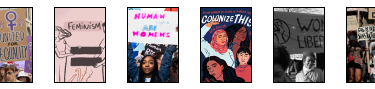

What are women for?
What are women for? This is the name of a YouTube report produced by INA in 1964.
At that time women were perceived as beings outside our society who were just slaves of man, with the sole and sole aim of satisfying man.
the notion of humanity thus becomes non-existent because each gender is not put at the same level of equality, two categories are built dispersing the men of women. These two categories will become one thanks to the evolution of society and especially the vision of women.
A striking inferiority
The analysis we are going to do includes different parts of the video and therefore different testimonies. The first quality that a man will quote from his wife is that she is a good cook, one could believe that it is only for his and not for other tasks. Another man adds that they gather at the bar to rest because the woman stays at home to clean and that it is not the man’s role to do this. Here the woman’s vision is reduced to an object that makes just the stains of kitchen and household, which reduces it to a bulky but useful thing.

Already here we see prejudices .There are some notable features for women. Therefore, the reporter adds that while men rest from women, women take care of men. This sentence may seem rather striking and it even reduces the woman to a state of slavery. By continuing on this women often end up in tears when men go to give them dry orders, for they regard them as less than nothing.
A non-existent notion of humanity
Men see themselves as the only race of humanity thinking that women are just accessories to their lives. The first thing that stands out is at the beginning of the story, where we are told that men don’t talk about women.One might think that they are just there to help them but that it is not useful to talk about them.
Afterwards the reporter tells us some rather striking terms that at the time were normal, such as the fact that she works for men, that they prepare for them, that they work in what they have invented etc. Here it is clear that the woman is not part of the society for men, she is right there at their disposal, to serve them.
Towards the end of the report, we are even told that a woman’s main duty is to be well and truly made up, she is reduced almost to an object that is there to please men only.
Then again some men prefer to give orders to men than to women, here he speaks of male self-esteem. That is why all the men interviewed tell us that women must stay home so that when they come home, everything is ready. Here men think only of themselves and ignore the happiness of women, they forget that they also need to be happy.
Nowadays
Our present epoch has evolved in terms of prejudice and inferiority between men-women. First of all, the rate of women going to school has increased enormously compared to before when she knew she wasn’t going to go to school so she could stay at home.
Women work in a variety of occupations, whereas before she was limited to being a seamstress or a nurse, at the political level it is the same, in parliament the number of women became twice as large as before.
Nevertheless some prejudices such as the fact that women must stay in the kitchen persist but it remains much more ironic than before.
Video : https://youtu.be/BfW72FjVC6k
Micro pavement on Feminism
VIDEO
Previous article
Would you like to see more?
Do not hesitate to look at the other articles proposed by other students.
